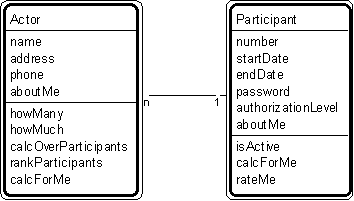

Patt#2. "Actor-Participant" Pattern // transaction patterns

Typical object interactions
- howMany --> calcForMe
- howMuch --> calcForMe
- calcOverParticipants --> calcForMe
- rankParticipants --> rateMe
- getName< -- getName
- getAddress <-- getAddress
Examples
- Actor: person, organization (agency, company, corporation, foundation)
- Participant: agent, applicant, buyer, cashier, clerk, client, civilian, customer, dealer, delegate, distributor, donor, employee, investor, manufacturer, member, officer, official, order clerk, owner, participant, policy holder, professional, prospect, recipient, retailer, sales clerk, sales rep, shipper, student, subscriber, supervisor, supplier, suspect, teacher, wholesaler, worker
- Additional examples: anything used for different missions, such as aircraft-civilian mission, aircraft-military mission.
Combinations
Patt#3. "Participant-Transaction"
Patt#2. "Actor-Participant", again (for example, customer - gold customer, for a customer who may participate as a gold customer, at least while he qualifies).
Related strategies:
Str#13. "Select Actors" Strategy
Str#14. "Select Participants" Strategy
Str#52. "Establish Actor and Participant Attributes" Strategy
Str#74. "Establish Actor and Participant Object Connections" Strategy
Str#94. "Establish Actor and Participant Services" Strategy